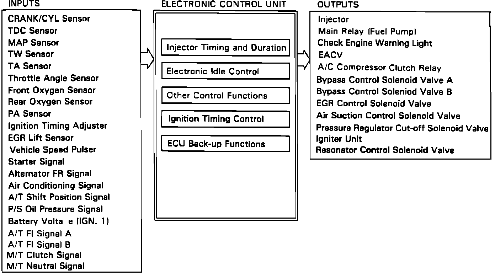

General System Description
PGM-FI System Operation:

Engine fuel, ignition, charging and emissions systems are controlled by the Programmed Fuel Injection Control System (PGM-FI). An array of underhood sensors continually report all aspects of engine operation to the PGM electronic control unit (ECU). The ECU uses the information it receives to adjust the output devices connected to it to improve driveability and fuel economy. If a sensor is perceived by the ECU to be providing inaccurate data, it reverts operation to a preset back-up program to allow the vehicle to operate until repairs can be made. When such a problem occurs, the ECU illuminates the Check Engine light on the dashboard to alert the driver that a fault has occurred and that the vehicle requires service.